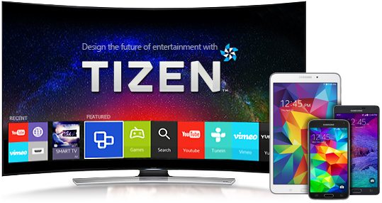
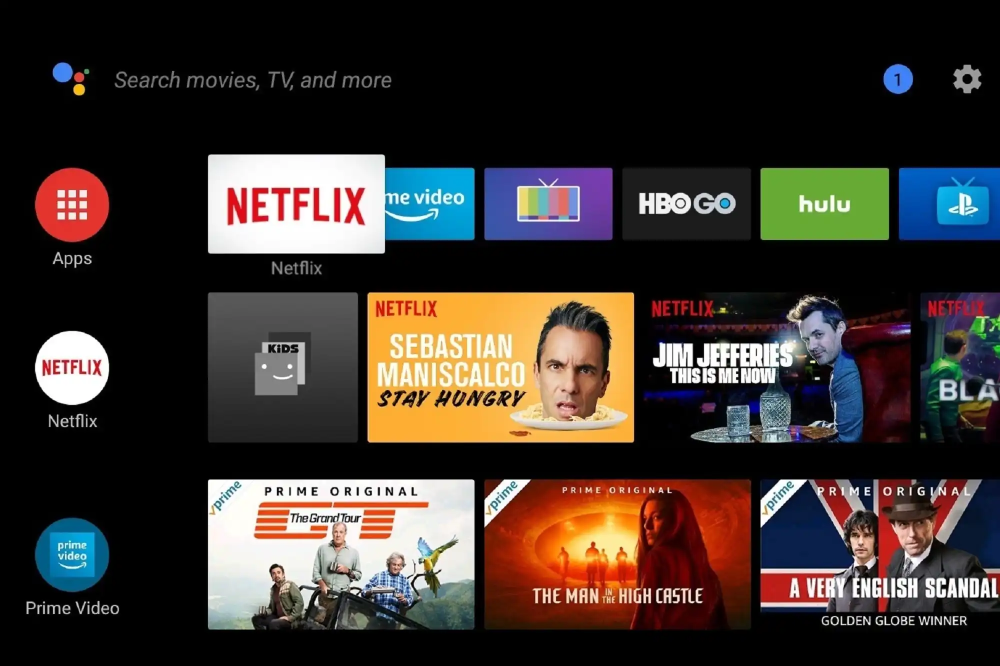
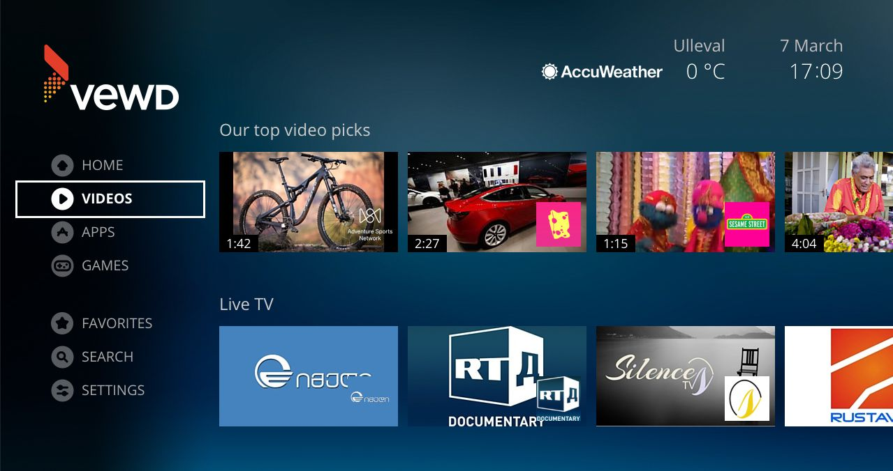

Sistemul de operare (SO), sau OS în engleză, reprezintă componenta de software fără de care un sistem de calcul nu poate funcționa. Acesta este compus din nucleu (denumit și kernel), interfața de operare și sistemul de fișiere
Interfața unui SO este reprezentată de ce vede un utilizator în timpul în care SO rulează. Sistemele de operare mai vechi foloseau o interfață de tip consolă care necesita cunoștințe de limbaj de programare deoarece puteai comunica cu un PC doar prin scris. De mult timp, interfața este și grafică și permite oricum să folosească un PC.
Cele mai cunoscute sisteme de operare gratuite pentru PC sunt: Linux, Chrome OS, FreeBSD, FreeDOS, Illumos, ReactOS, Haiku și MorphOS:
În general, diferența dintre sistemele de operare se face prin numărul de task-uri pe care le pot procesa simultan (single task și multi task), dar și prin numărul de utilizatori care pot lucra simultan (single user și multi user).
- Real-time(în timp real) – poate rula mai multe aplicații în același timp.
- Multi-user (mai mulți utilizatori) – permite accesul mai multor utilizatori în același timp.
- Single-user (un singur utilizator) – permite accesul unui singur utilizator simultan.
- Distributed– este definit prin mai multe calculatoare care acționează și funcționează ca unul singur.
- Templated– este destinat sistemelor de servere.
- Embedded – este creat special pentru a rula pe dispozitive cu hardware slab. Acesta nu consumă multe resurse, dar nu oferă nici performanță ridicată
Cu toate astea, mai există și o clasificare după popularitate. Aici Windows conduce detașat fiind urmat de Mac OS, Unix și Linux.


Unix este un sistem de operare în sistem multitasking care permite mai multor utilizatori să lucreze pe el în același timp.
Chrome nu este doar un browser de internet care mănâncă memoria ram. Îți vine să crezi sau nu, Google a dezvoltat un SO (sistem de operare) pentru dispozitivele cu configurații mai slabe precum Chromebooks.
Așa cum îi spune și numele, acesta este un OS gratuit. Pe deasupra, este și un sistem de operare open source, iar experiența este similară cu cea pe care o oferă Linux. Din păcate nu este la fel de popular precum Windows sau Linux.
ReactOS este puțin mai special deoarece, dezvoltatorii, și-au propus să creeze un sistem care poate rula programele create pentru Windows. Astfel, poți folosi toate programele și jocurile dedicate Windows fără a fi nevoit să mai cumperi licența de la Microsoft.

Lucrurile au evoluat atât de mult încât avem și sisteme de operare pentru TV. Pentru televizoare există o versiune de Android, Opera TV, Vewd, Tizen - care un sistem open source pentru televizoarele de la Samsung, ş.a.



Așadar, nu există doar sisteme de operare pentru PC, ci și pentru dispozitive mobile precum tablete și telefoane, dar și pentru televizoare. De asemenea, există variante de sisteme de operare pentru mașini care funcționează foarte bine, chiar dacă nu ai conexiune în permanență la internet.